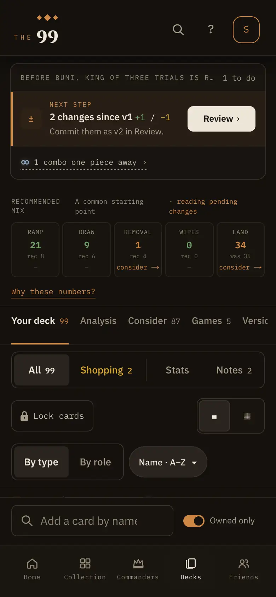
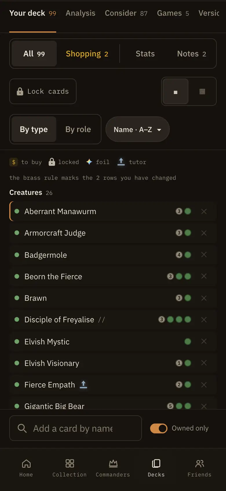
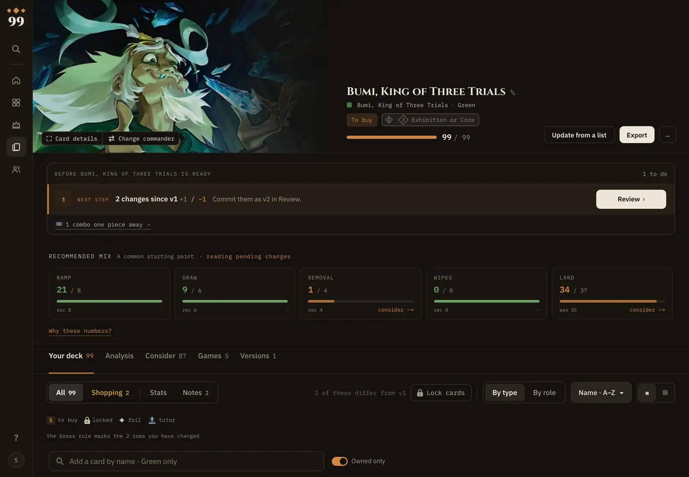
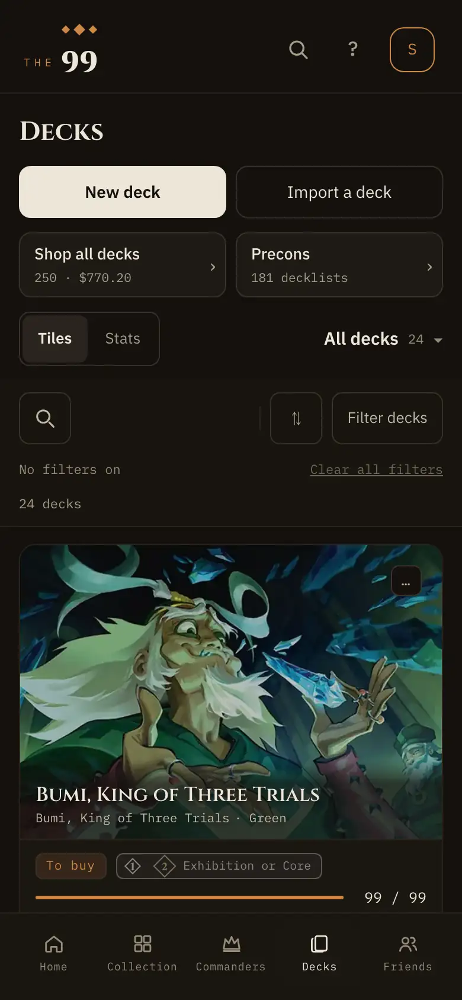
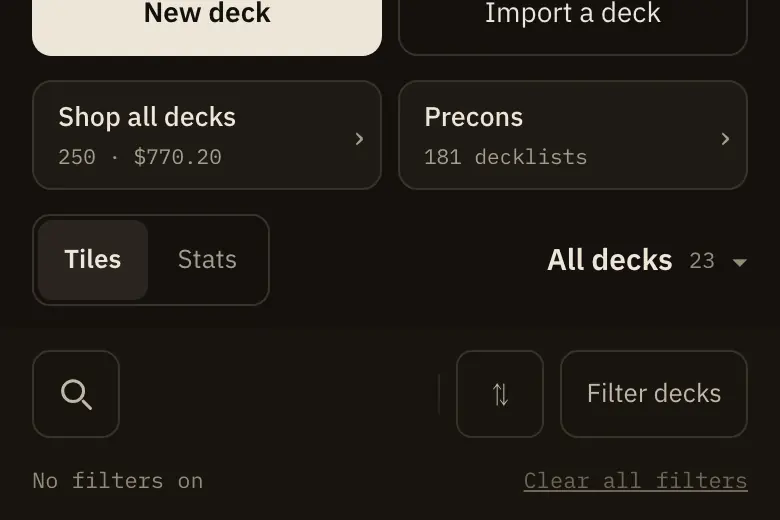
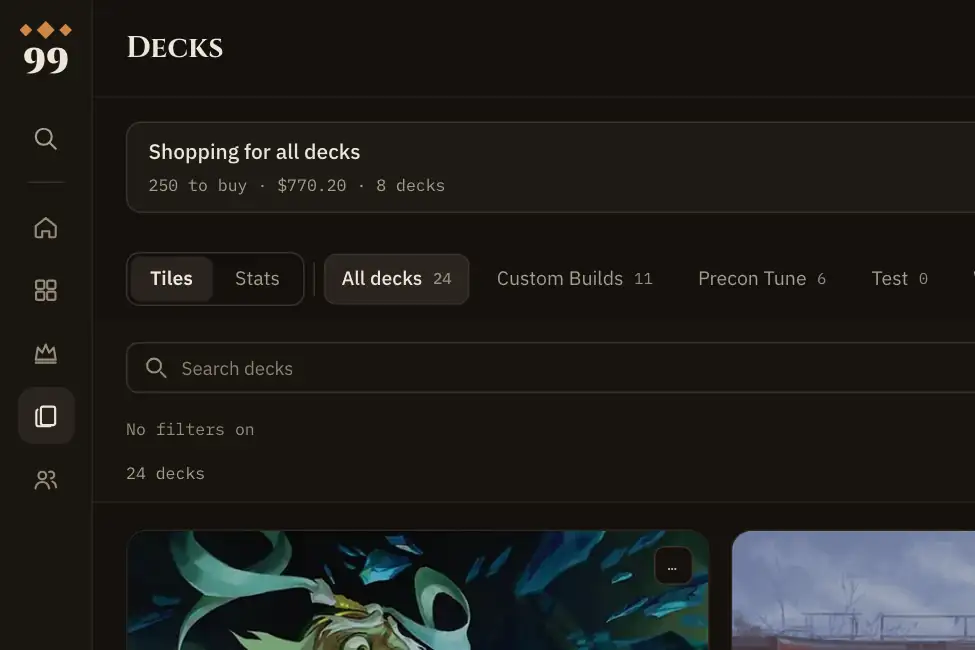
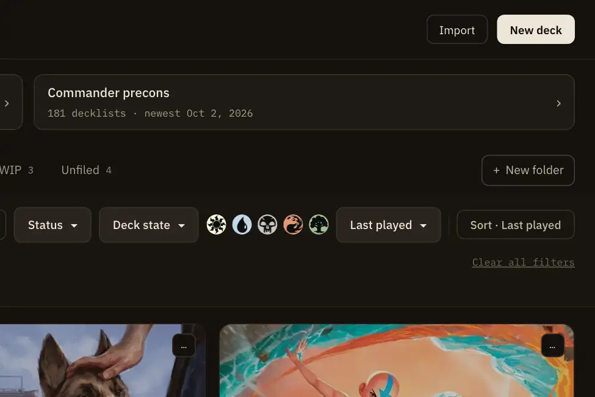

<title>About R4 Canvas</title>
<meta name="claude:viewport-fit-sides" content="cover">
<link rel="preconnect" href="https://fonts.googleapis.com">
<link href="https://fonts.googleapis.com/css2?family=Cinzel:wght@600;700&family=IBM+Plex+Mono:wght@400;500;600&family=IBM+Plex+Sans:wght@400;500;600;700&display=swap" rel="stylesheet">
<style>/* Layout: a long design canvas of numbered boards, each a row of Now / Proposed frames drawn at real size.
   Single dark look on purpose: the boards are the app's Low Sun dark theme, the frame around them its night table. */
:root{
  color-scheme:dark;
  --table:#0D0B09;--bg:#14110E;--surface:#1E1A15;--surface-raised:#211D18;--surface-rail:#1A1611;--surface-sunken:#18140F;
  --elevated:#29241F;--border:#2B241B;--border-strong:#3A3229;--fg:#EDE6D8;--fg-body:#C0B8A6;--fg-muted:#A59C89;--fg-faint:#948B78;
  --accent:#CF8745;--accent-text:#CF8745;--success:#6FA368;--fact:#8FA6BE;--danger:#C6533F;--was:#8FA6BE;
  --display:'Cinzel',Georgia,serif;--sans:'IBM Plex Sans',system-ui,sans-serif;--mono:'IBM Plex Mono',ui-monospace,monospace;
}
body{background:var(--table);color:var(--fg);font-family:var(--sans)}
*{box-sizing:border-box}
p,h1,h2,h3,h4,ol,ul,figure{margin:0}
ol,ul{padding:0;list-style:none}
a{color:var(--accent-text)}
a:focus-visible{outline:2px solid var(--accent);outline-offset:2px}
.canvas{display:flex;flex-direction:column;gap:72px;padding-block:40px 80px;padding-left:max(16px,env(safe-area-inset-left,0px));padding-right:max(16px,env(safe-area-inset-right,0px))}
.kick{display:flex;align-items:center;gap:10px;font:500 10.5px var(--mono);letter-spacing:.14em;text-transform:uppercase;color:var(--fg-faint)}
.kick .tag{background:var(--accent);color:var(--table);border-radius:5px;padding:3px 8px;font-weight:600;letter-spacing:.04em}
.top{display:flex;flex-direction:column;gap:12px;max-width:900px}
.top h1{font:700 clamp(28px,5vw,40px)/1.15 var(--display);text-wrap:balance}
.top p{font-size:15px;line-height:1.6;color:var(--fg-body);max-width:68ch}
.pillw,.pilli{font:600 11px var(--mono);letter-spacing:.06em;border-radius:4px;padding:2px 6px}
.pillw{background:color-mix(in oklab,var(--was) 22%,transparent);color:var(--was)}
.pilli{background:color-mix(in oklab,var(--accent) 22%,transparent);color:var(--accent-text)}
.map{display:grid;grid-template-columns:repeat(auto-fill,minmax(260px,1fr));gap:8px;margin-top:6px;counter-reset:m}
.map li{counter-increment:m;display:flex;align-items:baseline;gap:10px;border:1px solid var(--border);border-radius:10px;padding:10px 12px;background:var(--bg);font-size:13.5px;color:var(--fg-body)}
.map li::before{content:counter(m);font:600 12px var(--mono);color:var(--accent-text)}
.map li b{font-weight:500;color:var(--fg);flex:1;min-width:0}
.map a{font:500 11px var(--mono);white-space:nowrap}
.board{display:flex;flex-direction:column;gap:26px;scroll-margin-top:16px}
.bh{display:flex;flex-direction:column;gap:9px;max-width:1100px}
.bh h2{font:700 clamp(22px,3.4vw,28px)/1.2 var(--display);text-wrap:balance}
.bh p{font-size:14px;line-height:1.65;color:var(--fg-body);max-width:92ch}
.bh p b{color:var(--fg)}
.frames{display:flex;flex-wrap:wrap;gap:40px;align-items:flex-start;max-width:100%;overflow-x:auto;padding-bottom:4px}
.fr{display:flex;flex-direction:column;gap:12px;flex:none;max-width:100%}
.fr .lab2{font:500 10.5px var(--mono);letter-spacing:.14em;text-transform:uppercase;color:var(--was)}
.fr.is .lab2{color:var(--accent-text)}
.fr .cap{width:0;min-width:100%;font-size:13px;line-height:1.55;color:var(--fg-muted);text-wrap:pretty}
.note{max-width:820px;border:1px solid var(--border-strong);border-radius:12px;background:var(--bg);padding:14px 16px;font-size:13px;line-height:1.6;color:var(--fg-body)}

/* The labelled screen: picture, pins, halo (labelled-screen.tsx). */
.shot{position:relative;overflow:hidden;border:1px solid var(--border-strong);background:var(--surface-sunken);flex:none}
.shot img{position:absolute;inset:0;width:100%;height:100%;display:block}
.halo{position:absolute;z-index:2;border-radius:8px;box-shadow:0 0 0 2px color-mix(in oklab,var(--accent) 75%,transparent),0 0 0 6px color-mix(in oklab,var(--accent) 20%,transparent),0 0 0 2000px color-mix(in oklab,var(--bg) 34%,transparent)}
.pin{position:absolute;z-index:3;width:24px;height:24px;margin:-12px 0 0 -12px;border-radius:50%;background:var(--accent);color:var(--bg);font:600 12px/24px var(--mono);text-align:center;box-shadow:0 0 0 2px var(--bg),0 3px 10px rgb(0 0 0/.55)}
.pin.on{box-shadow:0 0 0 2px var(--bg),0 0 0 6px color-mix(in oklab,var(--accent) 38%,transparent),0 3px 10px rgb(0 0 0/.55)}
.labs{display:flex;flex-direction:column;gap:2px}
.lab{display:flex;gap:12px;align-items:flex-start;margin:0 -10px;padding:9px 10px;border:1px solid transparent;border-radius:10px;font-size:14px;line-height:1.5;color:var(--fg-body)}
.lab.on{border-color:color-mix(in oklab,var(--accent) 55%,transparent);background:var(--surface)}
.lab b{font-weight:600;color:var(--fg)}
.num{flex:none;width:22px;height:22px;margin-top:1px;border-radius:50%;background:var(--accent);color:var(--bg);font:600 11px/22px var(--mono);text-align:center}

/* Phone page column. */
.page{width:390px;background:var(--bg);border:1px solid var(--border-strong);border-radius:28px;overflow:hidden;padding:18px 0 26px}
.sec{display:flex;flex-direction:column;gap:16px;padding:0 16px 30px}
.sec.first-rule{border-top:1px solid var(--border);padding-top:26px}
.cropwrap{height:150px;overflow:hidden;border:1px solid var(--border-strong);border-top:0;border-radius:0 0 20px 20px;position:relative}
.cropwrap img{display:block;max-width:none}
.ellip{font:500 10.5px var(--mono);color:var(--fg-faint);text-align:center;letter-spacing:.06em}
.sech{display:flex;flex-direction:column;gap:3px}
.sech .kick{letter-spacing:.14em}
.sech h2{font:600 21px var(--display)}
.sech p{font-size:13.5px;color:var(--fg-muted)}
.sech.new .kick{color:var(--accent-text)}
.screensep{height:10px;background:var(--table);border-block:1px solid var(--border-strong);margin:4px 0 30px}
.blk{display:flex;flex-direction:column;gap:16px}
.sh{display:flex;align-items:center;gap:10px;border-top:1px solid var(--border);padding-top:14px}
.sh h3{font:600 18px var(--display);letter-spacing:.01em}
.sh>span:last-child{font-size:13px;color:var(--fg-muted);margin-left:2px}
.plate{box-sizing:border-box;display:flex;width:22px;height:22px;flex:none;align-items:center;justify-content:center;border-radius:6px;background:color-mix(in srgb,var(--accent) 16%,transparent);border:1px solid color-mix(in srgb,var(--accent) 45%,transparent);color:var(--accent)}
.plate .dia{width:7px;height:7px;transform:rotate(45deg);background:var(--accent)}
.ringmark{display:flex;width:22px;height:22px;flex:none;align-items:center;justify-content:center;border-radius:50%;border:1px solid var(--accent);color:var(--accent-text);font-size:12px}
.panel{display:flex;flex-direction:column;gap:14px;border-radius:16px;padding:14px 14px 16px;margin:0 -4px}
.panel .sh{border-top:0;padding-top:0}
.panel.gtk{background:var(--surface-sunken);border:1px solid var(--border-strong)}
.panel.try{background:color-mix(in oklab,var(--accent) 7%,var(--bg));border:1px solid color-mix(in oklab,var(--accent) 34%,var(--border))}
.swipe{display:flex;gap:12px;overflow:hidden;margin-right:-16px}
.panel .swipe{margin-right:-14px}
.swipe li{flex:none;width:292px}
.dots{display:flex;justify-content:center;gap:6px}
.dots i{width:6px;height:6px;border-radius:50%;background:var(--border-strong)}
.dots i.on{background:var(--accent)}
.rule{display:flex;flex-direction:column;height:100%;border:1px solid var(--border);border-radius:14px;background:var(--surface);overflow:hidden}
.rpic{min-height:150px;display:flex;align-items:center;justify-content:center;background:var(--bg);border-bottom:1px solid var(--border);padding:12px}
.rule>p{padding:13px 14px 15px;font-size:13.5px;line-height:1.55;color:var(--fg-body)}
.dg{width:256px;display:flex;flex-direction:column;gap:10px}
.crow{display:flex;align-items:center;gap:10px;border:1px solid var(--border-strong);border-radius:8px;padding:8px 10px;background:var(--surface);font-size:13px}
.crow span{flex:1}
.dot{width:9px;height:9px;border-radius:50%}
.dot.own{background:var(--success)}
.tag{font:500 10px var(--mono);font-style:normal;color:var(--accent-text);border:1px solid color-mix(in oklab,var(--accent) 50%,transparent);border-radius:999px;padding:1px 7px}
.dcap{font:500 10.5px var(--mono);color:var(--fg-muted)}
.chips{display:flex;flex-wrap:wrap;gap:6px}
.chips s{font:11px var(--mono);color:var(--fg-faint);border:1px dashed var(--border-strong);border-radius:999px;padding:2px 8px}
.cells{display:grid;grid-template-columns:repeat(3,1fr);gap:8px}
.cells div{display:flex;flex-direction:column;gap:4px;border:1px solid var(--border-strong);border-radius:8px;padding:8px;background:var(--surface);font-variant-numeric:tabular-nums}
.cells b{font:600 11px var(--mono);color:var(--fg-muted);text-transform:uppercase;letter-spacing:.06em}
.cells span{font-size:14px}
.cells i{height:4px;border-radius:2px;background:linear-gradient(90deg,var(--success) var(--p),var(--border-strong) var(--p))}
.cells i.lo{background:linear-gradient(90deg,var(--accent) var(--p),var(--border-strong) var(--p))}

/* Tool card, shipped (tool-card.tsx). */
.tc{display:flex;flex-direction:column;border:1px solid var(--border);border-radius:14px;background:var(--surface);overflow:hidden}
.tpic{position:relative;aspect-ratio:3/2;border-bottom:1px solid var(--border);background:var(--bg);overflow:hidden}
.tpic img,.npic img{position:absolute;inset:0;width:100%;height:100%;object-fit:cover;display:block}
.thalo{position:absolute;border-radius:9px;box-shadow:0 0 0 2px color-mix(in oklab,var(--accent) 75%,transparent),0 0 0 6px color-mix(in oklab,var(--accent) 20%,transparent),0 0 0 2000px color-mix(in oklab,var(--bg) 28%,transparent)}
.tbd{display:flex;flex-direction:column;gap:8px;padding:14px 14px 12px}
.tbd h4,.nbd h4{font-size:16px;font-weight:600;line-height:1.3}
.tbd p,.nbd p{font-size:14px;line-height:1.5;color:var(--fg-body)}
.tft{display:flex;align-items:center;gap:10px;min-height:40px;border-top:1px solid var(--border);padding-top:8px;margin-top:2px}
.sm{font:12px var(--mono);color:var(--fg-muted);white-space:nowrap}
.go{margin-left:auto;font-size:13.5px;color:var(--fg-muted);white-space:nowrap;overflow:hidden;text-overflow:ellipsis}
.ring{display:flex;width:30px;height:30px;flex:none;align-items:center;justify-content:center;border-radius:50%;border:1px solid var(--accent);color:var(--accent-text);font-size:15px}
.more{align-self:center;min-height:44px;display:flex;align-items:center;font:500 10px var(--mono);letter-spacing:.04em;color:var(--fg-faint)}

/* Tool card, proposed. */
.ntc{display:flex;flex-direction:column;gap:12px;border:1px solid var(--border-strong);border-radius:14px;background:var(--surface);padding:10px 10px 12px;position:relative;z-index:1}
.npic{position:relative;aspect-ratio:3/2;border-radius:9px;border:1px solid var(--border-strong);background:var(--bg);overflow:hidden;box-shadow:inset 0 0 0 1px rgb(0 0 0/.35)}
.nbd{display:flex;flex-direction:column;gap:8px;padding:0 4px}
.where{font:12px var(--mono);color:var(--fg-muted);text-decoration:underline;text-decoration-color:var(--border-strong);text-underline-offset:3px}
.btn{display:flex;align-items:center;justify-content:center;gap:8px;min-height:44px;margin-top:4px;border-radius:10px;background:var(--accent);color:var(--bg);font-size:14.5px;font-weight:600}
.btn b{font-weight:600}
.stack{position:relative;padding-bottom:12px}
.peek{position:absolute;left:8px;right:8px;bottom:6px;height:20px;border:1px solid var(--border-strong);border-top:0;border-radius:0 0 14px 14px;background:var(--surface-raised)}
.peek.two{left:16px;right:16px;bottom:0;background:var(--surface-sunken);z-index:-1}
.morebtn{display:flex;align-items:center;justify-content:center;gap:8px;min-height:44px;border-radius:10px;border:1px solid var(--border-strong);background:var(--surface);color:var(--fg);font-size:14px;font-weight:500}
.morebtn b{color:var(--accent-text)}
.drow{display:grid;grid-template-columns:repeat(2,330px);gap:16px;align-items:start}
.drow .ntc .btn{margin-top:auto}

/* Phone viewport. */
.vp{position:relative;width:390px;height:844px;border:1px solid var(--border-strong);border-radius:36px;overflow:hidden;background:var(--bg)}
.phead{position:absolute;inset:0 0 auto;height:52px;z-index:6;display:flex;align-items:center;justify-content:space-between;padding:0 18px;background:var(--bg);border-bottom:1px solid var(--border);font:600 16px var(--display)}
.phead span{width:26px;height:26px;border-radius:50%;border:1px solid var(--border-strong);display:flex;align-items:center;justify-content:center;font:500 13px var(--sans);color:var(--fg-muted)}
.vpclip{position:absolute;inset:52px 0 74px;overflow:hidden}
.vpbody{position:absolute;left:0;right:0}
.vpbody>.sech{padding:26px 16px 16px}
.tabbar{position:absolute;inset:auto 0 0;height:74px;z-index:6;display:flex;justify-content:space-around;padding:8px 6px 14px;background:var(--surface-rail);border-top:1px solid var(--border)}
.tabbar span{display:flex;flex-direction:column;align-items:center;gap:5px;font-size:10.5px;color:var(--fg-faint)}
.tabbar i{width:20px;height:20px;border-radius:6px;border:1.5px solid currentColor;opacity:.7}
.tabbar .cur{color:var(--accent-text)}
.dock{position:absolute;left:12px;right:12px;bottom:86px;z-index:5;display:flex;gap:12px;align-items:flex-start;padding:12px 12px 12px 14px;border-radius:12px;border:1px solid color-mix(in oklab,var(--accent) 55%,var(--border-strong));background:var(--elevated);box-shadow:0 -12px 36px rgb(0 0 0/.45);font-size:14px;line-height:1.5;color:var(--fg-body)}
.dock p{flex:1;min-width:0}
.dock b{color:var(--fg);font-weight:600}
.dock .x{flex:none;width:28px;height:28px;display:flex;align-items:center;justify-content:center;color:var(--fg-muted);font-size:14px;margin:-4px -4px 0 0}

@media (max-width:700px){.drow{grid-template-columns:1fr}.drow .tc,.drow .ntc{max-width:330px}}
@media (prefers-reduced-motion:reduce){*{scroll-behavior:auto}}
.gut{position:relative;flex:none}
.lead,.leadv{position:absolute;z-index:3;background:color-mix(in oklab,var(--accent) 45%,transparent)}
.lead{height:1px}
.leadv{width:1px}
.lead.on,.leadv.on{background:var(--accent)}
.tick{position:absolute;z-index:3;width:7px;height:7px;margin:-3.5px 0 0 -3.5px;border-radius:50%;background:var(--bg);border:1.5px solid color-mix(in oklab,var(--accent) 70%,transparent)}
.tick.on{background:var(--accent);border-color:var(--accent)}
.sh.stacked{display:grid;grid-template-columns:22px 1fr;column-gap:10px;row-gap:2px;align-items:center}
.sh.stacked>span:last-child{grid-column:2;margin-left:0}
</style>
<main class="canvas"><header class="top"><span class="kick">The 99 · About · R4 for Hugh’s audit · 2026-10-29</span>
<h1>About pages, after the build</h1>
<p>Your seven notes, drawn over the shipped pages and real Low Sun captures (Decks › Your decks and Your deck). Each board shows <span class="pillw">Now</span> beside <span class="pilli">Proposed</span>. New strings are drafts for copy review.</p>
<ol class="map">
<li><b>Circles cover what they describe</b><a href="#b1">Board 1</a></li>
<li><b>Try it header looks like a button</b><a href="#b4">Board 4</a></li>
<li><b>Confusing card CTAs, picture bleeds into text</b><a href="#b5">Board 5</a></li>
<li><b>Highlight boxes cut off</b><a href="#b2">Board 2</a></li>
<li><b>Tapping a number on a phone does nothing visible</b><a href="#b3">Board 3</a></li>
<li><b>Good to know and Try it blend together</b><a href="#b4">Board 4</a></li>
<li><b>“X more below” too subtle on a phone</b><a href="#b4">Board 4</a></li>
</ol></header><section class="board" id="b1"><header class="bh"><span class="kick"><span class="tag">1</span>Numbered circles</span><h2>The number sits beside what it names, never on it</h2><p>Today a pin sits 14px inside its region’s top-left corner, so on a small region (the commit button, the lock toggle, a row’s 4px dot) the 24px disc covers the very thing it describes. Placing it beside the region does not hold up either: these screens are dense, and beside one control is on top of the next. Proposed: the pins move <b>off the picture</b> into a 30px gutter on its left, each at its region’s height, with a hairline leader that ends in a small tick at the region’s edge. The capture is drawn 30px narrower to make room. Lit, the leader and tick turn full accent along with the halo. Two pins closer than 28px slide apart down the gutter and the leader bends to follow. Numbers, reading order and five pins a picture are unchanged, and the same rule holds on desktop.</p></header><div class="frames"><figure class="fr was"><figcaption class="lab2">Now · Your deck, shot 1</figcaption><div class="shot" style="width:358px;height:775px;border-radius:20px"><span class="pin" style="left:257.3px;top:151.5px">1</span><span class="pin" style="left:14.0px;top:259.7px">2</span><span class="pin" style="left:28.7px;top:534.0px">3</span></div><p class="cap">Pin 1 covers “Commit as v2”, pin 3 covers the lock toggle.</p></figure><figure class="fr is"><figcaption class="lab2">Proposed · shot 1</figcaption><div class="gut" style="width:358px;height:710px;padding-left:30px"><div class="shot" style="width:328px;height:710px;border-radius:20px"></div><span class="lead" style="left:27.0px;top:140.0px;width:225.9px"></span><span class="tick" style="left:252.9px;top:140.0px"></span><span class="pin" style="left:15.0px;top:140.0px">1</span><span class="lead" style="left:27.0px;top:239.1px;width:3.0px"></span><span class="tick" style="left:30.0px;top:239.1px"></span><span class="pin" style="left:15.0px;top:239.1px">2</span><span class="lead" style="left:27.0px;top:490.4px;width:16.4px"></span><span class="tick" style="left:43.4px;top:490.4px"></span><span class="pin" style="left:15.0px;top:490.4px">3</span></div><p class="cap">Nothing on the capture is covered; each leader ends at its control.</p></figure><figure class="fr was"><figcaption class="lab2">Now · shot 2</figcaption><div class="shot" style="width:358px;height:775px;border-radius:20px"><span class="pin" style="left:36.9px;top:343.8px">4</span><span class="pin" style="left:138.5px;top:613.8px">5</span></div><p class="cap">Pin 4 hides the row’s dot entirely; pin 5 hides the bracket mark.</p></figure><figure class="fr is"><figcaption class="lab2">Proposed · shot 2</figcaption><div class="gut" style="width:358px;height:710px;padding-left:30px"><div class="shot" style="width:328px;height:710px;border-radius:20px"></div><span class="lead" style="left:27.0px;top:305.5px;width:24.0px"></span><span class="tick" style="left:51.0px;top:305.5px"></span><span class="pin" style="left:15.0px;top:305.5px">4</span><span class="lead" style="left:27.0px;top:556.2px;width:117.1px"></span><span class="tick" style="left:144.1px;top:556.2px"></span><span class="pin" style="left:15.0px;top:556.2px">5</span></div><p class="cap">The row’s dot and the bracket mark stay visible, each with its leader.</p></figure></div></section><section class="board" id="b2"><header class="bh"><span class="kick"><span class="tag">2</span>Highlight boxes</span><h2>A lit region keeps its whole ring</h2><p>A region that touches the picture’s edge drew its ring outside the frame, and the frame’s rounded, clipped edge cut it off. Recommended mix runs to the right edge on desktop and across the full width on a phone. Proposed: the lit box is held 8px inside the frame, which also clears the rounded corners, so the ring always closes.</p></header><div class="frames"><figure class="fr was"><figcaption class="lab2">Now · desktop, Recommended mix lit</figcaption><div class="shot" style="width:700px;height:485px;border-radius:12px"><span class="halo" style="left:33.4px;top:248.5px;width:666.6px;height:101.5px"></span></div><p class="cap">The ring is cut off down the right side.</p></figure><figure class="fr is"><figcaption class="lab2">Proposed</figcaption><div class="shot" style="width:700px;height:485px;border-radius:12px"><span class="halo" style="left:33.4px;top:248.5px;width:658.6px;height:101.5px"></span></div><p class="cap">The ring closes on all four sides.</p></figure></div></section><section class="board" id="b3"><header class="bh"><span class="kick"><span class="tag">3</span>Tapping a number on a phone</span><h2>Tapping a number shows its words where you are looking</h2><p>A phone capture is taller than the screen, so the label list starts below the fold. Tapping pin 3 lit the lock toggle and nothing else visibly changed. Proposed: the tap also docks that label in a small card above the tab bar. It stays while the region is lit; tapping another pin swaps it, and ✕ or tapping the pin again puts it out. The page does not move, so the lit region stays in view. The full list below the capture is unchanged.</p></header><div class="frames"><figure class="fr was"><figcaption class="lab2">Now · pin 3 tapped</figcaption><div class="vp"><div class="phead"><b>The 99</b><span>?</span></div><div class="vpclip"><div class="vpbody" style="top:-140px"><div class="sech"><span class="kick">Decks · Your deck</span><h2>Your deck</h2><p>The list, and what each row is telling you.</p></div><div style="padding:0 16px"><div class="shot" style="width:358px;height:775px;border-radius:20px"><span class="halo" style="left:14.7px;top:520.0px;width:106.5px;height:40.4px"></span><span class="pin" style="left:257.3px;top:151.5px">1</span><span class="pin" style="left:14.0px;top:259.7px">2</span><span class="pin on" style="left:28.7px;top:534.0px">3</span></div></div><div style="padding:16px 16px 0"><ol class="labs"><li class="lab"><span class="num">1</span><span><b>Your changes</b> wait here until you commit. “Commit as v2” saves them as the deck’s next version.</span></li><li class="lab"><span class="num">2</span><span><b>Recommended mix</b> counts ramp, draw, removal, wipes and lands against what decks like yours run. “consider →” shows cards that fill a gap.</span></li><li class="lab on"><span class="num">3</span><span><b>Lock cards</b> protects the cards you pick. No tool will cut a locked card unless you say so.</span></li></ol></div></div></div><div class="tabbar"><span class="on"><i></i>Home</span><span class="cur"><i></i>Decks</span><span><i></i>Collection</span><span><i></i>Commanders</span><span><i></i>Friends</span></div></div><p class="cap">The region lights, but the words are about 300px below the fold.</p></figure><figure class="fr is"><figcaption class="lab2">Proposed · pin 3 tapped</figcaption><div class="vp"><div class="phead"><b>The 99</b><span>?</span></div><div class="vpclip"><div class="vpbody" style="top:-140px"><div class="sech"><span class="kick">Decks · Your deck</span><h2>Your deck</h2><p>The list, and what each row is telling you.</p></div><div style="padding:0 16px"><div class="gut" style="width:358px;height:710px;padding-left:30px"><div class="shot" style="width:328px;height:710px;border-radius:20px"><span class="halo" style="left:13.4px;top:476.4px;width:97.5px;height:37.0px"></span></div><span class="lead" style="left:27.0px;top:140.0px;width:225.9px"></span><span class="tick" style="left:252.9px;top:140.0px"></span><span class="pin" style="left:15.0px;top:140.0px">1</span><span class="lead" style="left:27.0px;top:239.1px;width:3.0px"></span><span class="tick" style="left:30.0px;top:239.1px"></span><span class="pin" style="left:15.0px;top:239.1px">2</span><span class="lead on" style="left:27.0px;top:490.4px;width:16.4px"></span><span class="tick on" style="left:43.4px;top:490.4px"></span><span class="pin on" style="left:15.0px;top:490.4px">3</span></div></div><div style="padding:16px 16px 0"><ol class="labs"><li class="lab"><span class="num">1</span><span><b>Your changes</b> wait here until you commit. “Commit as v2” saves them as the deck’s next version.</span></li><li class="lab"><span class="num">2</span><span><b>Recommended mix</b> counts ramp, draw, removal, wipes and lands against what decks like yours run. “consider →” shows cards that fill a gap.</span></li><li class="lab on"><span class="num">3</span><span><b>Lock cards</b> protects the cards you pick. No tool will cut a locked card unless you say so.</span></li></ol></div></div></div><div class="dock"><span class="num">3</span><p><b>Lock cards</b> protects the cards you pick. No tool will cut a locked card unless you say so.</p><span class="x">✕</span></div><div class="tabbar"><span class="on"><i></i>Home</span><span class="cur"><i></i>Decks</span><span><i></i>Collection</span><span><i></i>Commanders</span><span><i></i>Friends</span></div></div><p class="cap">Region and words on one screen; the page has not scrolled.</p></figure></div><div class="note">An alternative, already built: scroll just far enough to show the label line. It is simpler, but on a tall capture it can push the lit region off the top, which is why the dock is the recommendation.</div></section><section class="board" id="b4"><header class="bh"><span class="kick"><span class="tag">4</span>Sections, Try it heading, “more below”</span><h2>Each part of a screen reads as its own block</h2><p>Three of your points meet in one stretch of the phone page. <b>Good to know</b> and <b>Try it</b> shared one heading style and sat straight on the page, so they ran into each other and into the next screen. Proposed: each sits on its own panel, with Good to know on the sunken surface and Try it faintly lit in the accent, and a wide band now separates one screen from the next, with the screen’s place on the page in its kicker. The <b>Try it heading</b> loses the round arrow, which was the same shape as each card’s press. Its mark is now a square plate in Good to know’s family. <b>“1 more below”</b> becomes a full-width button with the count, and the cards behind the first one peek out under it, so it is clear there are more.</p></header><div class="frames"><figure class="fr was"><figcaption class="lab2">Now · Decks, end of Your decks into Your deck</figcaption><div class="page"><div class="sec"><div class="cropwrap"></div><ol class="labs"><li class="lab"><span class="num">3</span><span><b>Stats</b> puts every deck side by side: when each was last played, and how it went.</span></li><li class="lab"><span class="num">4</span><span><b>A deck’s status</b> says what to do next.</span></li></ol><div class="blk"><div class="sh"><span class="ringmark">→</span><h3>Try it</h3><span>Each card opens the tool for real</span></div><article class="tc"><div class="tpic"></div><div class="tbd"><h4>Stats for your decks</h4><p>Every deck side by side: when each last played, and how it went.</p><div class="tft"><span class="sm">Show me ›</span><span class="go">See your decks on Stats</span><span class="ring">→</span></div></div></article><span class="more">1 more below ▾</span></div></div><div class="sec first-rule"><div class="sech"><span class="kick">Decks · Your deck</span><h2>Your deck</h2><p>The list, and what each row is telling you.</p></div><div class="ellip">⋯ two captures and five labels ⋯</div><div class="cropwrap"></div><ol class="labs"><li class="lab"><span class="num">4</span><span><b>A row’s dot</b> shows whether you own the card: filled green is in your Collection, hollow and dashed is not, or is a proxy. A bright edge marks a row you changed since your last commit.</span></li><li class="lab"><span class="num">5</span><span><b>The marks after a name</b> flag Game Changers (WotC’s list) plus mass land denial, extra turns and tutors, which are read from card text and can miss one.</span></li></ol><div class="blk"><div class="sh"><span class="plate"><i class="dia"></i></span><h3>Good to know</h3><span>What the screen can’t show</span></div><ul class="swipe"><li><article class="rule"><div class="rpic"><div class="dg"><div class="crow"><i class="dot own"></i><span>Craterhoof Behemoth</span><em class="tag">locked</em></div><p class="dcap">Every tool skips it</p><div class="chips"><s>Suggested changes</s><s>Proposed cuts</s><s>Clear all auto</s></div></div></div><p>A locked card is safe from every tool: none will offer to cut it, and updating the deck from a list starts it kept. The lock ends when you commit a version without the card.</p></article></li><li><article class="rule"><div class="rpic"><div class="dg"><p class="dcap">Kinnan · targets from Kinnan decks</p><div class="cells"><div><b>Ramp</b><span>18 / 16</span><i style="--p:100%"></i></div><div><b>Draw</b><span>9 / 10</span><i style="--p:90%"></i></div><div><b>Wipes</b><span>1 / 3</span><i style="--p:33%" class="lo"></i></div></div></div></div><p>Targets come from the closest decks EDHREC can measure: decks with your commander first, then decks in its colors. Going over a target never counts against you.</p></article></li></ul><div class="dots"><i class="on"></i><i></i><i></i></div></div></div></div><p class="cap">Try it’s round arrow matches the card’s press. “1 more below” is 10px faint mono. Good to know and Try it differ only by their marks.</p></figure><figure class="fr is"><figcaption class="lab2">Proposed</figcaption><div class="page new"><div class="sec"><div class="cropwrap"></div><ol class="labs"><li class="lab"><span class="num">3</span><span><b>Stats</b> puts every deck side by side: when each was last played, and how it went.</span></li><li class="lab"><span class="num">4</span><span><b>A deck’s status</b> says what to do next.</span></li></ol><div class="panel try"><div class="sh stacked"><span class="plate try"><svg viewBox="0 0 12 12" width="11" height="11" aria-hidden="true"><path d="M6 0 L7.3 4.7 L12 6 L7.3 7.3 L6 12 L4.7 7.3 L0 6 L4.7 4.7 Z" fill="currentColor"/></svg></span><h3>Try it</h3><span>Each card opens the tool for real</span></div><div class="stack"><article class="ntc"><div class="npic"></div><div class="nbd"><h4>Stats for your decks</h4><p>Every deck side by side: when each last played, and how it went.</p><span class="where">Where it is on the screen above ↑</span><span class="btn">See your decks on Stats <b>→</b></span></div></article><div class="peek"></div><div class="peek two"></div></div><span class="morebtn">Show 1 more tool <b>▾</b></span></div></div><div class="screensep"></div><div class="sec"><div class="sech new"><span class="kick">Decks · screen 2 of 4</span><h2>Your deck</h2><p>The list, and what each row is telling you.</p></div><div class="ellip">⋯ two captures and five labels ⋯</div><div class="cropwrap"></div><ol class="labs"><li class="lab"><span class="num">4</span><span><b>A row’s dot</b> shows whether you own the card: filled green is in your Collection, hollow and dashed is not, or is a proxy. A bright edge marks a row you changed since your last commit.</span></li><li class="lab"><span class="num">5</span><span><b>The marks after a name</b> flag Game Changers (WotC’s list) plus mass land denial, extra turns and tutors, which are read from card text and can miss one.</span></li></ol><div class="panel gtk"><div class="sh stacked"><span class="plate"><i class="dia"></i></span><h3>Good to know</h3><span>What the screen can’t show</span></div><ul class="swipe"><li><article class="rule"><div class="rpic"><div class="dg"><div class="crow"><i class="dot own"></i><span>Craterhoof Behemoth</span><em class="tag">locked</em></div><p class="dcap">Every tool skips it</p><div class="chips"><s>Suggested changes</s><s>Proposed cuts</s><s>Clear all auto</s></div></div></div><p>A locked card is safe from every tool: none will offer to cut it, and updating the deck from a list starts it kept. The lock ends when you commit a version without the card.</p></article></li><li><article class="rule"><div class="rpic"><div class="dg"><p class="dcap">Kinnan · targets from Kinnan decks</p><div class="cells"><div><b>Ramp</b><span>18 / 16</span><i style="--p:100%"></i></div><div><b>Draw</b><span>9 / 10</span><i style="--p:90%"></i></div><div><b>Wipes</b><span>1 / 3</span><i style="--p:33%" class="lo"></i></div></div></div></div><p>Targets come from the closest decks EDHREC can measure: decks with your commander first, then decks in its colors. Going over a target never counts against you.</p></article></li></ul><div class="dots"><i class="on"></i><i></i><i></i></div></div></div></div><p class="cap">Two panels, a band between screens, a square mark, and a real button with a peek of the next card.</p></figure></div></section><section class="board" id="b5"><header class="bh"><span class="kick"><span class="tag">5</span>Tool cards</span><h2>One way in per card</h2><p>Today the whole card is the press (Try it), “Show me ›” is a second link inside it, and the picture runs edge to edge into the text. Proposed: the card has <b>one</b> press, a solid button that says where it goes. Only the button opens the tool, so the picture is no longer a hidden hit area. The picture sits inset in its own frame, apart from the words. Show me becomes a plain line under the description saying what it does: it points out the tool on the screen above.</p></header><div class="frames"><figure class="fr was"><figcaption class="lab2">Now · phone</figcaption><div style="width:358px"><article class="tc"><div class="tpic"></div><div class="tbd"><h4>Stats for your decks</h4><p>Every deck side by side: when each last played, and how it went.</p><div class="tft"><span class="sm">Show me ›</span><span class="go">See your decks on Stats</span><span class="ring">→</span></div></div></article></div><p class="cap">Two presses, plus a picture that is also a press.</p></figure><figure class="fr is"><figcaption class="lab2">Proposed · phone</figcaption><div style="width:358px"><article class="ntc"><div class="npic"></div><div class="nbd"><h4>Stats for your decks</h4><p>Every deck side by side: when each last played, and how it went.</p><span class="where">Where it is on the screen above ↑</span><span class="btn">See your decks on Stats <b>→</b></span></div></article></div><p class="cap">One button. The picture is framed, not clickable.</p></figure><figure class="fr was"><figcaption class="lab2">Now · desktop row</figcaption><div class="drow"><article class="tc"><div class="tpic"><span class="thalo" style="left:22.11%;top:39.379999999999995%;width:8.61%;height:6.93%"></span></div><div class="tbd"><h4>Stats for your decks</h4><p>Every deck side by side: when each last played, and how it went.</p><div class="tft"><span class="sm">Show me ›</span><span class="go">See your decks on Stats</span><span class="ring">→</span></div></div></article><article class="tc"><div class="tpic"><span class="thalo" style="left:5.6899999999999995%;top:18.709999999999997%;width:90.92%;height:13.969999999999999%"></span></div><div class="tbd"><h4>Precons</h4><p>Any Commander precon, with how many of its cards you already own.</p><div class="tft"><span class="sm">Show me ›</span><span class="go">Browse precons</span><span class="ring">→</span></div></div></article></div><p class="cap"></p></figure><figure class="fr is"><figcaption class="lab2">Proposed · desktop row</figcaption><div class="drow"><article class="ntc"><div class="npic"><span class="thalo" style="left:22.11%;top:39.379999999999995%;width:8.61%;height:6.93%"></span></div><div class="nbd"><h4>Stats for your decks</h4><p>Every deck side by side: when each last played, and how it went.</p><span class="where">Where it is on the screen above ↑</span><span class="btn">See your decks on Stats <b>→</b></span></div></article><article class="ntc"><div class="npic"><span class="thalo" style="left:5.6899999999999995%;top:18.709999999999997%;width:90.92%;height:13.969999999999999%"></span></div><div class="nbd"><h4>Precons</h4><p>Any Commander precon, with how many of its cards you already own.</p><span class="where">Where it is on the screen above ↑</span><span class="btn">Browse precons <b>→</b></span></div></article></div><p class="cap">Buttons sit on one baseline across the row.</p></figure></div></section></main>
